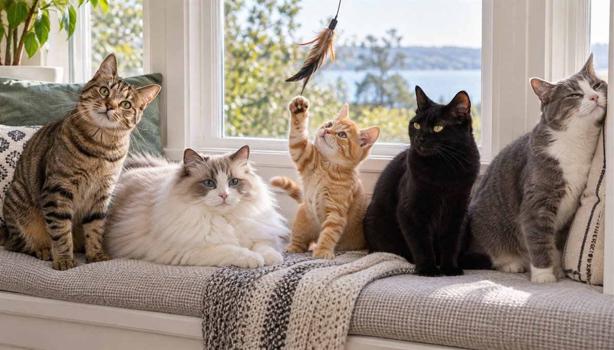

Cat Personality Types: Which One Is Your Cat?

Every cat owner is quietly convinced their cat is one of a kind — the fearless explorer, the nervous shadow-dweller, the affectionate lap-loafer, the tiny household dictator. It turns out we're not just spoiling them with stories. Researchers have measured feline temperament across thousands of cats, and the personality patterns that emerge are real, consistent, and closer to human personality than most people expect. Here's what the science actually says about cat personality types, what shapes your cat's, and how to figure out which one is currently ignoring you from across the room.
Is "cat personality" even a real thing?
For years, scientists were cautious about applying the word "personality" to animals — it sounded like wishful thinking from besotted owners. The data didn't cooperate with that caution. Cats show consistent individual differences in how they react to people, other animals and new situations across time and settings, which is essentially the scientific definition of personality. A bold cat tends to stay bold at the vet as well as at home; a timid one stays timid. That consistency is exactly what lets researchers measure "types" in the first place.
The clearest map to date comes from a study called "The Feline Five," published in PLOS ONE in 2017 by a team at the University of South Australia. They asked owners of more than 2,800 cats across Australia and New Zealand to rate their cats on 52 personality traits — and when the answers were crunched, five broad factors fell out. Strikingly, they line up neatly with the human "Big Five" personality model, which is why the framework feels so intuitive.
The building blocks: the Feline Five
Before the recognizable "types," it helps to know the dimensions underneath them — the five dials every cat is set somewhere along. Your cat isn't one factor; they're a unique blend of all five.
The five core personality factors
Neuroticism — insecurity, anxiousness, shyness and fear of people. High-scorers are the hiders and the easily-startled.
Extraversion — how active, curious, inventive and switched-on a cat is. High-scorers are the busy explorers who investigate everything.
Dominance — assertiveness and pushiness toward other cats, including bullying the resident housemates.
Impulsiveness — erratic, reckless, unpredictable behavior. High-scorers can seem "wired" or reactive.
Agreeableness — affectionateness, friendliness to people and gentleness. High-scorers are the cuddlers and the easygoing companions.
Because every cat sits somewhere on all five dials, no two cats feel identical even when they share a "type." Think of the types below as popular combinations of these factors, not rigid boxes.
The five cat personality types you'll actually recognize
Translate the Feline Five into everyday living-room behavior and a handful of familiar characters emerge. These aren't official diagnostic categories — they're the common blends of the underlying factors, described in plain language so you can spot your cat.
😺 The Social Butterfly
High agreeableness, high extraversion. Meets you at the door, supervises your every move, and greets guests instead of hiding from them. Loves lap time, play and company — the cat that shatters the "aloof feline" stereotype.
Often thrives with: busy, sociable households and homes where someone's usually around.
🐾 The Curious Explorer
High extraversion, moderate impulsiveness. Into everything — open cupboards, high shelves, the one box you just emptied. Smart, inventive and easily bored, this cat needs mental stimulation or it will invent its own (usually at 3 a.m.).
Thrives with: puzzle feeders, climbing shelves and rotating toys to keep the busy brain occupied.
🫣 The Sensitive Soul
High neuroticism. Startles easily, hides from visitors, and needs time and a predictable routine to feel safe. Often the most misunderstood cat — not "unfriendly," just cautious — and the one that blossoms most with patience, hiding spots and gentle, low-pressure interaction.
Thrives with: calm, quiet homes, vertical hiding spots and owners who let the cat set the pace.
👑 The Boss Cat
High dominance. Confident, opinionated and clear about who runs the household. May guard favorite spots, food or people, and can be pushy with other pets. With enough resources to go around, that self-assurance settles into a calm, in-charge presence.
Thrives with: plenty of separate resources (bowls, litter boxes, perches) so there's nothing to fight over.
😻 The Mellow Companion
High agreeableness, low neuroticism, low impulsiveness. The easygoing old soul — unbothered by noise or change, happy to nap on the couch and roll with whatever the day brings. The "honestly the perfect cat" archetype.
Thrives with: just about anyone, including first-time owners, families and apartment life.
What actually shapes your cat's personality?
1. Genetics & the father's temperament
Boldness and friendliness are partly inherited — and research has found that a kitten's confidence with people is influenced by the father's temperament, even though kittens rarely meet their dads. Breed leans this way too: some lines trend chatty and clingy, others independent. It's a nudge, not a guarantee.
2. Early socialization
The sensitive window in kittens is roughly 2 to 7 weeks — even earlier than in dogs. Kittens gently handled by a variety of people during that stretch tend to grow into confident, people-friendly adults. Gaps in that early experience often show up later as shyness or fearfulness.
3. Environment & daily life
Personality isn't frozen. A predictable routine, enough vertical space, hiding spots, play and enrichment can measurably raise a cat's confidence and lower reactivity. A crowded or chaotic home can push the same cat the other way. What you provide every day is part of who your cat becomes.
4. Age & health
Kittens are still figuring themselves out, and many cats mellow with age. Crucially, a sudden shift in your cat's usual personality — new hiding, irritability, clinginess or aggression — can signal pain or illness rather than a mood, and is always worth a vet check.
How to spot your cat's type
You don't need a lab. Watch your cat in three everyday moments and the dials become obvious: a visitor arrives (greets them? watches from a shelf? vanishes under the bed?), a sudden noise (barely flicks an ear? bolts? investigates?), and a new object in the room (immediate inspection? cautious sniff from a distance? total avoidance?). Those three reactions map onto extraversion, neuroticism and impulsiveness — the factors that separate the types. Reading your cat's body language and tail talk makes the picture even sharper.
A 5-minute home test: score your cat on the Feline Five
The researchers used a long owner questionnaire, but you can get a useful picture in five minutes. Rate each statement from 1 (never) to 5 (always) based on how your cat acts most days — not on their best or worst moment. This is a fun, informal check, not a validated scientific instrument.
Rate your cat
Neuroticism: Hides from visitors or loud noises; takes a long time to relax in new places.
Extraversion: Investigates new objects right away; seeks out play and exploring.
Dominance: Blocks other pets from food, perches or doorways; pushes other cats around.
Impulsiveness: Switches from calm to wild with little warning; hard to predict.
Agreeableness: Seeks out your lap, tolerates handling, greets people kindly.
Any factor you score 4–5 is a dial turned up high; 1–2 is turned down low. A cat with high Agreeableness and Extraversion looks like the Social Butterfly above; high Neuroticism with low Extraversion looks like the Sensitive Soul. Most cats land in the middle on at least two factors, which is exactly why the “types” blur into each other.
Match your cat's type to the home they need
Knowing the type is only useful if it changes what you do. This quick cheat sheet turns each blend into daily habits.
| Type | What helps most | Watch out for |
|---|---|---|
| 😺 Social Butterfly | Daily one-on-one play, a window perch, regular company | Loneliness and attention-seeking if left alone for long stretches |
| 🐾 Curious Explorer | Puzzle feeders, climbing shelves, a toy rotation (see our toy rotation method) | Getting into cabinets, houseplants and anything dangling |
| 🫣 Sensitive Soul | Hiding spots, a predictable routine, slow introductions | Stress from visitors, moves, new pets and loud holidays |
| 👑 Boss Cat | Separate food, water, litter boxes and perches | Resource guarding and bullying of housemates |
| 😻 Mellow Companion | Gentle routines and regular play so easygoing doesn't become couch-bound | Weight gain — track it with the body condition score |
Personality, breed and the "secure attachment" surprise
Breed does tilt the odds. A Finnish study published in Scientific Reports (Salonen and colleagues, 2019) surveyed owners of roughly 5,700 cats across about 40 breeds and found measurable differences between breeds in traits such as activity and fearfulness, with a clear heritable component. But the spread within each breed is large, so a breed label predicts a cat's personality far less reliably than watching the actual cat. If you're choosing a breed, our Breed Finder and the guides to family-friendly and affectionate cats are a better starting point than stereotypes.
Another finding worth knowing: cats are often more bonded to us than their reputation suggests. In a 2019 Current Biology study led by Kristyn Vitale at Oregon State University, about 64% of cats showed a secure attachment to their owner — very close to the roughly 65% reported for dogs and human infants in similar tests. Personality shapes how a cat shows it (a Sensitive Soul may bond deeply but only on their terms), not whether they do. For more on the signs, see signs your pet loves you.
Personality in multi-cat homes
Personality mismatches explain most “my cats won't get along” stories. A few patterns show up again and again:
- Two Boss Cats will contest every resource. Give each cat their own feeding station, water bowl and perch, and keep a general rule of one litter box per cat plus one extra, in separate spots.
- A Boss Cat plus a Sensitive Soul needs vertical escape routes and hiding spots so the shy cat can leave a standoff without losing face. Never force them to “work it out.”
- Two Curious Explorers usually get along well when they have plenty to do — and make trouble together when bored.
- A Mellow Companion is the classic best bet as a first or second cat, and often the easiest match for a newcomer. Our guide to introducing a new pet walks through the slow-introduction steps.
Tension signs such as staring, blocking doorways and one cat avoiding common areas are covered in our cat body language guide.
Personality at the vet (and why it matters)
A cat's type often predicts how the vet visit will go. Sensitive Souls may freeze or hide in the carrier, Bosses may lash out when handled, and Explorers may try to inspect the exam room. A few small habits help every type: leave the carrier out at home all year as a regular hangout spot, use a towel or familiar blanket inside it, and book the first or last appointment of the day when the waiting room is quieter. Tell your vet your cat's “type” — it genuinely helps them handle your cat with less stress. For routine care, keep your vaccine schedule handy.
Personality and treats: what to feed each type
Food motivation is a handy window into temperament. Confident, food-driven Explorers and Social Butterflies are easiest to train with tiny rewards, while Sensitive Souls may only accept treats after they feel safe. Whatever the type, keep treats to about 10% of daily calories and use our calorie calculator to size the portions. Safe, low-calorie options include small bites of plain cooked chicken, a lick of tuna now and then (not as a main meal), plain cooked pumpkin and a few bites of cantaloupe. A few foods people often offer are not cat-safe — see foods cats should never eat and check chocolate before sharing any sweet.
🎃 Fall, holidays and the clock change: a stress test for every type
This stretch of the year puts every personality type through its paces. Halloween has just ended, daylight saving time ends today, November 1, 2026 (a one-hour shift in feeding and play times that cats notice immediately), and Thanksgiving falls on November 26, with guests and strange smells on the way.
- Sensitive Souls: keep a quiet, closed-off room with food, water and a litter box on holiday gatherings, and shift meal times gradually (10–15 minutes a day) rather than all at once.
- Curious Explorers: decorations, candles, tinsel and string are irresistible — secure them. Our Halloween pet safety guide covers the hazards that linger after the holiday.
- Boss Cats: guests in “their” territory can trigger marking or swatting; give them a high perch to supervise from.
- Social Butterflies: they will happily beg from the table — read Thanksgiving foods dangerous for pets before the feast.
When a "personality change" is really a health signal
Senior cats deserve a special mention: new night-time yowling, confusion, or a sharp change in temperament can be linked to pain, thyroid or kidney issues, or age-related cognitive changes. Have these checked out rather than assuming it’s “just getting old.” You can compare your cat’s life stage with our pet age calculator.
Quick takeaways
- Cat personality is real, measurable and fairly stable — five factors, many blends.
- Use your cat's type to shape their home: enrichment for Explorers, hideouts for Sensitive Souls, separate resources for Bosses.
- Treat the “types” as helpful tendencies, not labels that limit your cat.
- A sudden personality change is a reason to call the vet, not a quirk.
Sources & notes
Research referenced: Litchfield et al., “The ‘Feline Five’: An exploration of personality in pet cats,” PLOS ONE (2017); Salonen et al., “Breed differences of heritable behaviour traits in cats,” Scientific Reports (2019); Vitale et al., “Attachment bonds between domestic cats and humans,” Current Biology (2019). Care guidance is consistent with the American Association of Feline Practitioners (AAFP), ASPCA and Pet Poison Helpline. The five “types” and the home test above are CanMyPet’s informal translations of the research, not official categories. For information only — not veterinary advice.
Frequently asked questions
How many cat personality types are there?
There's no single official number. The 2017 "Feline Five" study identified five underlying factors (Neuroticism, Extraversion, Dominance, Impulsiveness, Agreeableness) rather than fixed types. The recognizable "types" people talk about — the social butterfly, the explorer, the sensitive soul, the boss, the mellow companion — are common combinations of those five factors.
Does breed decide my cat's personality?
It influences tendencies but doesn't decide them. Some breeds lean chatty, active or lap-loving, but there's wide variation within every breed, and early handling, genetics and the father's temperament all shape the individual cat. A "cuddly breed" can produce an aloof cat, and vice versa.
Can I change my cat's personality?
You can't turn one type into another, but you can move the dials — especially confidence and reactivity — with patience, routine, enrichment and gentle handling. Shy and anxious cats often improve a lot with hiding spots, vertical space and low-pressure interaction.
My cat suddenly changed. Should I worry?
A sudden change in your cat's normal personality — new hiding, aggression, clinginess or withdrawal — can be a sign of pain, stress or illness and is worth a vet visit. This guide is for information and fun, not veterinary or behavioral diagnosis. For serious anxiety or aggression, talk to your vet or a certified cat behaviorist.
Which cat personality type is best for first-time owners?
The Mellow Companion is usually the easiest match: low anxiety, adaptable and forgiving of beginner mistakes. A Social Butterfly is also a great fit. Sensitive Souls can be wonderful too, but need patience, routine and a calm home. Spend time with the individual cat before adopting, since shelter staff can often describe each cat's temperament in detail.
Are orange cats or black cats really different in personality?
Coat color is a popular stereotype, but the evidence is thin and mixed. Individual temperament, early handling and genetics matter far more than fur color. Judge the cat in front of you, not the coat.
Do male and female cats have different personalities?
Not reliably. Differences between individual cats are much larger than any average difference between males and females. Neutering or spaying mostly reduces roaming, spraying and mating-related behavior rather than changing core personality.
Is my shy cat fixable?
Shy cats can gain confidence, but you are moving the dial rather than changing the type. Offer hiding spots, vertical space, a predictable routine, short low-pressure play sessions and treats from a distance. Let the cat approach you, and avoid forcing contact. If fear is severe or sudden, see your vet or a certified cat behaviorist.
Can cats have personality problems like anxiety?
Yes. Cats can develop stress-related behaviors such as overgrooming, hiding, inappropriate urination or aggression, often triggered by changes at home or by medical problems. These aren't personality flaws. Rule out health issues with your vet first, then address the stressor with a behavior professional if needed.